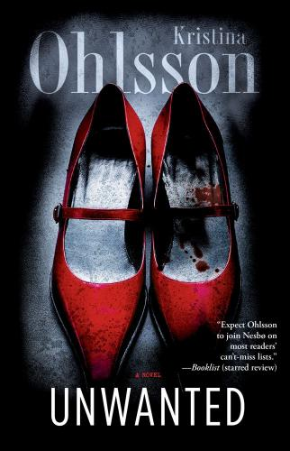

The Mostly Harmless Book Group: We meet once a month to read and discuss books that are in the sci-fi/fantasy genre, although we've been told we push the boundaries on our definition of the genre so be warned! NEXT MEETING: Monday, Sept. 29th, 6pm at Longfellow Books BOOK: 'The Dog Stars' by Peter Heller Read More Here...
The International Book Group: We meet once a month to read mysteries from around the world and taste food from the book's home country. NEXT MEETING: Tuesday, October 28th, 6pm. BOOK: 'Unwanted' by Kristina Ohlsson Read More Here...

*Sponsored by Flatbread Pizza* Box 'o' Chocolates Book Group: We meet once a month to eat pizza, drink some beer and chat about our latest book pick. We read a little bit of everything so come by, share your thoughts, and tell us what you want to read next NEXT MEETING: Wednesday, October 8th, 7pm. BOOK: 'Wild' by Cheryl Strayed Read More Here...

Cook Book Book Club: On a monthly basis, we meet to discuss books about food. We alternate between paperback memoirs and new hardcover cookbooks. We politely request that before the meeting, you make at least one recipe from any cookbook being discussed. Next Meeting: Thursday, September 18th, 6pm. MEETING OFFSITE! Book: 'Vietnamese Home Cooking' byCharles Phan Read More Here...